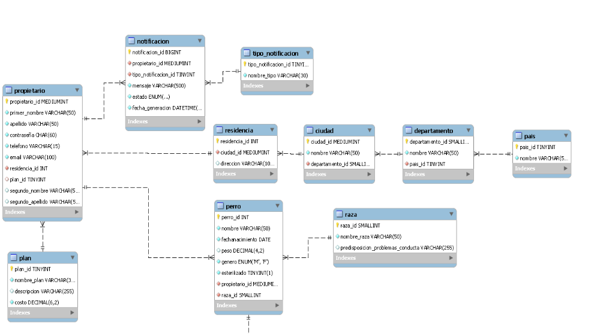
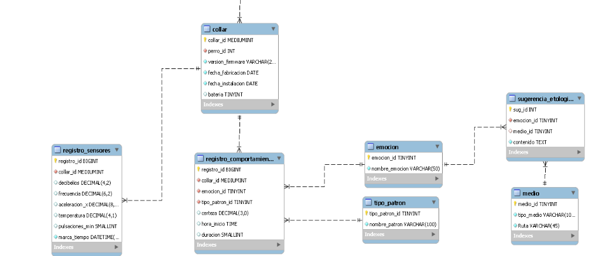

Definición de MER
El modelo ER es un modelo conceptual el cual se usa para diseñar y esquematizar las bases de datos representado mediante un diagrama/modelo un esquema el cual permite visualizar la lógica, estructura y componentes de una base de datos., este modelo está compuesto por entidades, atributos y relaciones, las entidades son objetos o conceptos del mundo real mientras que los atributos son elementos que permiten describir los componentes de las entidades, finalmente las relaciones describen las interacciones entre entidades y necesitan de cardinalidades que indican cuántas instancias de una entidad pueden relacionarse con otras. El modelo MER es una herramienta intermedia entre el levantamiento de requerimientos de un sistema y la implementación física de una base de datos que permite visualizar la representación clara de sus datos y relaciones y la estructura lógica de la base de datos diseñada

